Arco eléctrico (Der Eisendrachen)
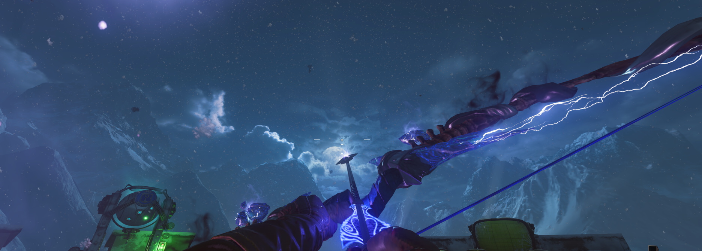
Requisitos: Tener el arco normal.
Conseguir la flecha eléctrica: Tendremos que ir a la zona de la trampa tesla y disparar con el arco al símbolo del dragón. La flecha eléctrica aparecerá debajo.
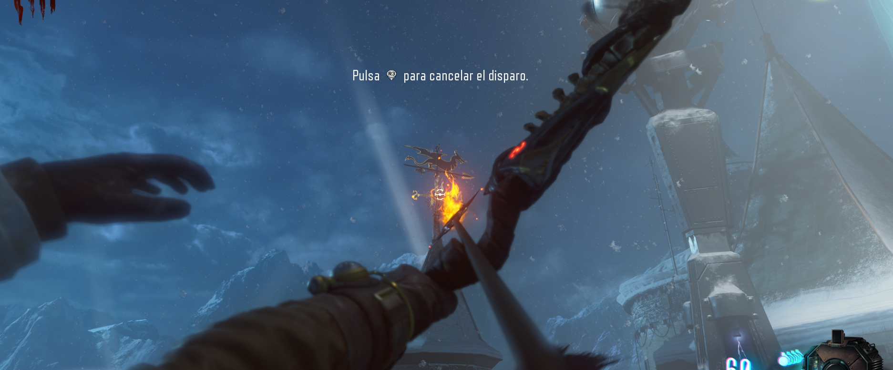
Hogueras: Tendremos que disparar a tres hogueras con el arco y hacer que ardan. Aquí las localizaciones:
Primera hoguera: A la izquierda de la torre del reloj.
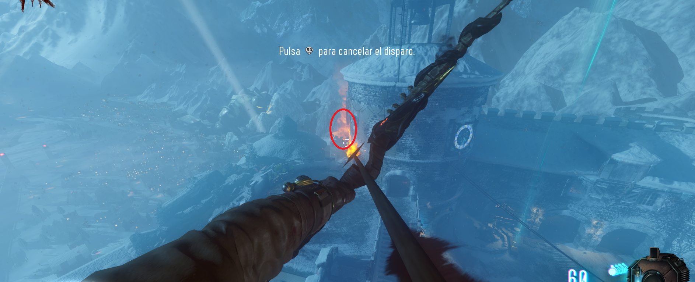
Segunda hoguera: Encima de la zona del Doble-Tap, desde una grieta en la pared se podrá observar a lo lejos.
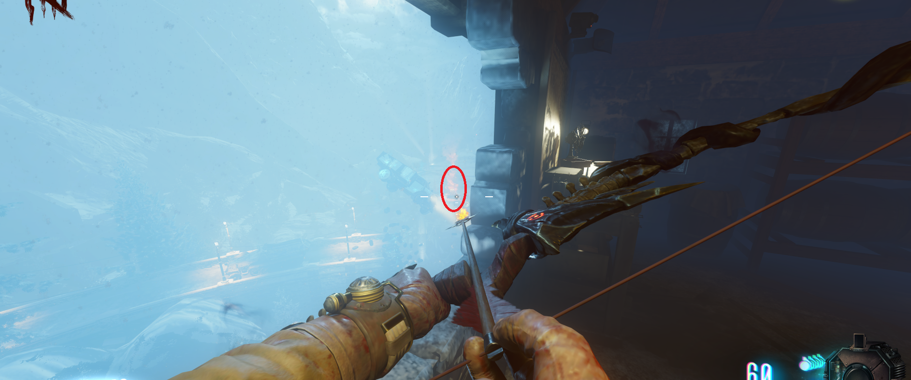
Tercera hoguera: Desde la lanzadera del cohete, según sales de la zona del teleporter a la izquierda.
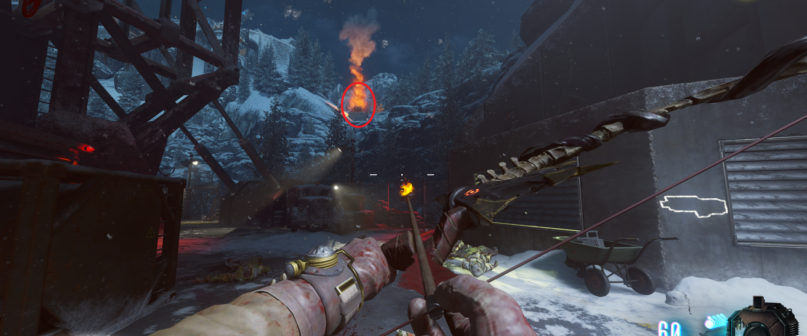
Gravedad: Una vez las tres hogueras ardan bajaremos a la zona de la piramidad. Cuando se desactiva la gravedad tendremos que recorrer las paredes pasando por unos símbolos de viento sin tocar el suelo (Son un total de 6).
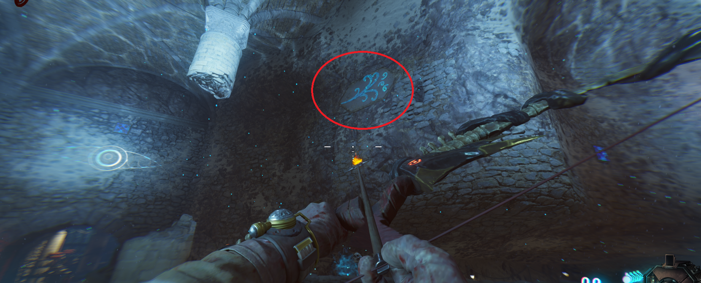
Cargar hogueras: El siguiente paso es cargar unos objetos eléctricos con almas de zombies cerca de las hogueras.
Primera carga: Debajo de las escaleras de la torre del reloj. Disparamos a la hoguera que se encuentra fuera.
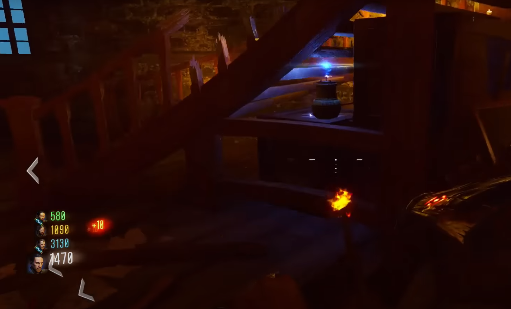
Segunda carga: Justo a la izquierda de la ventana de la segunda hoguera.
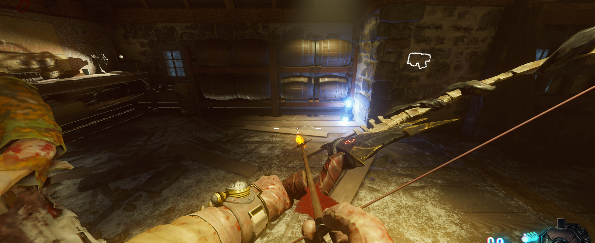
Tercera carga: Dentro de la zona de lanzamiento del cohetez justo enfrente del teleporter. Dispararemos a la hoguera que se encuentra fuera.
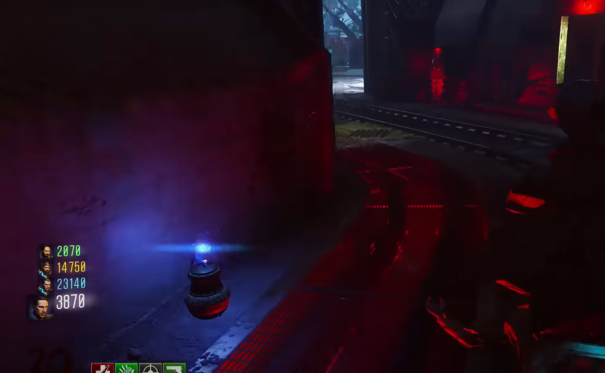
Luego apuntaremos con el arco donde se encuentra la carga y a nuestra flecha le aparecerá una chispa. Con esta carga dispararemos nuevamente a las hogueras para que estas tengan rayos en su interior.
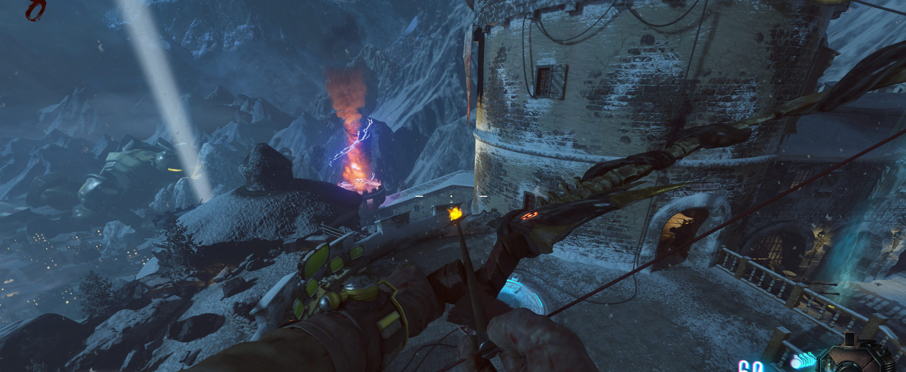
Flecha mejorada: Una vez electrificadas las hogueras, volveremos a la zona donde obtuvimos la flecha la primera vez e interactuaremos con el humo azul que se encuentra en el suelo. Esto nos dará la flecha mejorada.
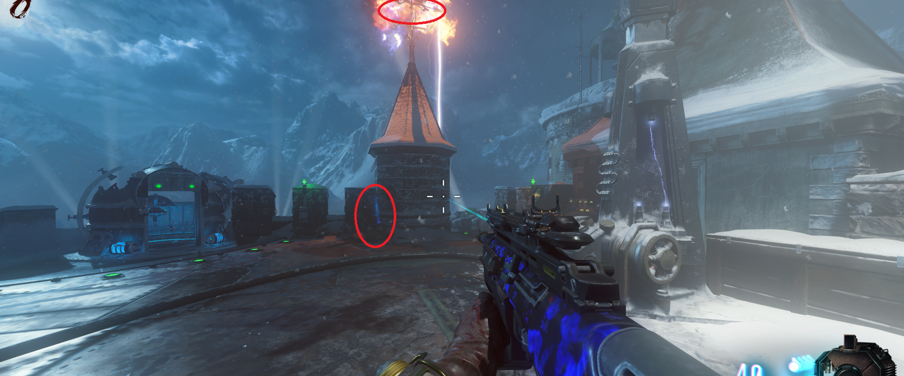
Colocar la flecha: Llevaremos la flecha a la zona de la pirámide y la colocaremos en su correspondiente cofre.
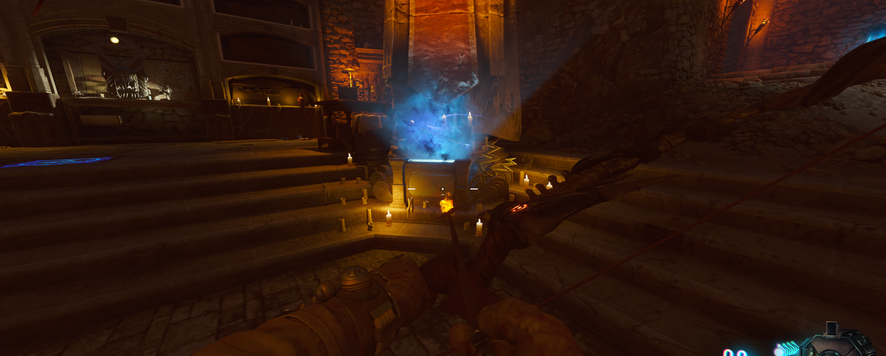
Recoger el arco: Cuando terminemos de cargarla con zombies, podremos recoger el arco mejorado.
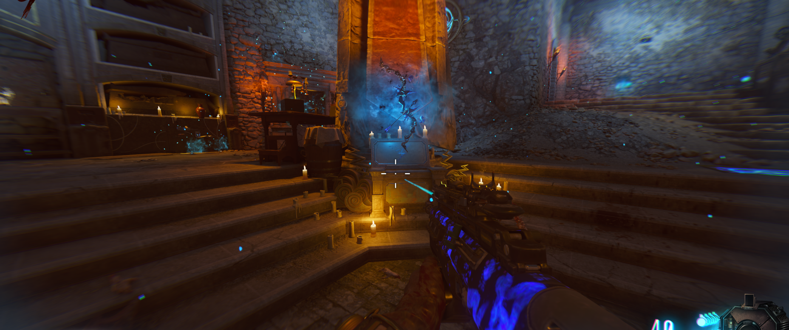